जून से अक्टूबर
धान, मक्का, अरहर, मूंग, उड़द, जूट, तिल, सोयाबीन, बाजरा, सब्जियाँ.
Bihar Special Agriculture Guide
धान, गेहूँ, मक्का, दाल, तेलहन, सब्जी, फल, मखाना और डेयरी तक की practical जानकारी. हर जगह official Bihar और central portal links दिए गए हैं ताकि आवेदन, subsidy और advisory सीधे सही जगह से मिल सके.

Bihar Crop Calendar
बिहार में rice-wheat और rice-maize system बहुत common है. उत्तर बिहार में बाढ़, दक्षिण बिहार में सूखा/नमी की कमी, और कई इलाकों में zinc, sulphur, boron deficiency production को प्रभावित करती है.
धान, मक्का, अरहर, मूंग, उड़द, जूट, तिल, सोयाबीन, बाजरा, सब्जियाँ.
गेहूँ, रबी मक्का, चना, मसूर, मटर, सरसों/राई, आलू, प्याज, लहसुन.
ग्रीष्म मूंग, मक्का, खीरा, ककड़ी, तरबूज, खरबूज, चारा, सब्जियाँ.
मखाना, लीची, आम, केला, अमरूद, मशरूम, पान, हल्दी, धनिया, मिर्च.
Photo Guide
इन cards में बिहार/सहरसा के हिसाब से common crops, बागवानी, मखाना, मछली और dairy model को जल्दी पहचानने लायक photo के साथ रखा गया है.
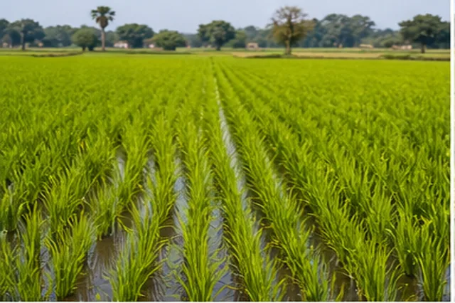
Lowland और सिंचित खेतों की मुख्य फसल. पानी, nursery, zinc और stem borer पर ध्यान दें.
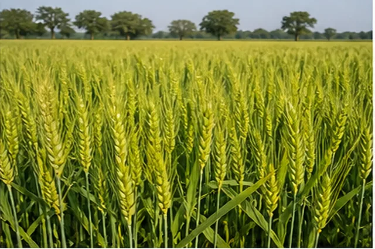
Rice-wheat belt की मजबूत फसल. समय पर बुवाई, rust, aphid और सिंचाई schedule देखें.
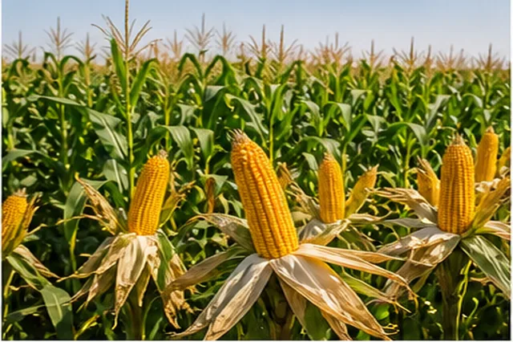
ऊँची जमीन और Rabi season में अच्छा option. Fall armyworm और nitrogen split जरूरी.
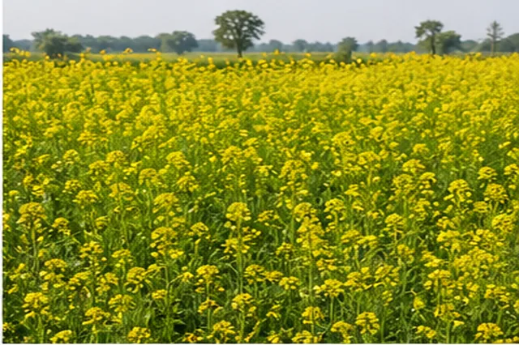
तेलहन crop. Aphid, white rust, alternaria blight और sulphur nutrition पर नजर रखें.
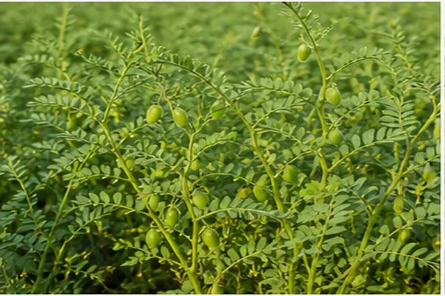
चना, मसूर, अरहर, मूंग, उड़द. Seed treatment, wilt और pod borer से बचाव करें.
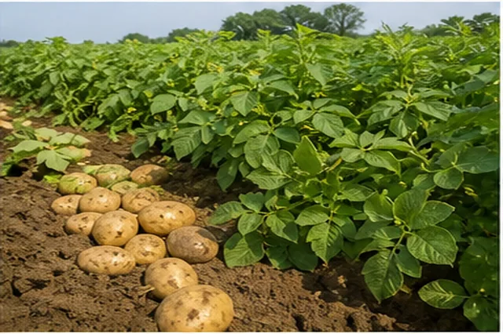
सब्जी और cash crop. Late blight, seed quality, मिट्टी की नमी और market timing अहम.
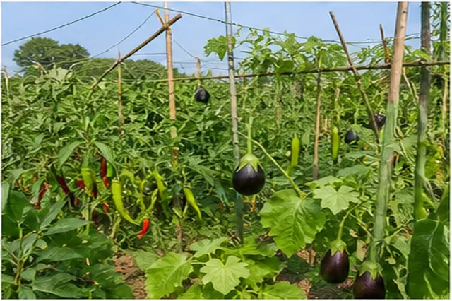
बैंगन, मिर्च, भिंडी, लौकी, करेला, टमाटर. Fruit borer, whitefly और wilt पर ध्यान दें.
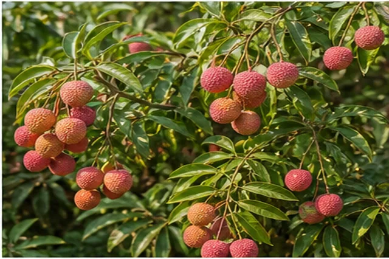
उत्तर बिहार की खास बागवानी. Irrigation, pruning, fruit cracking और orchard care जरूरी.
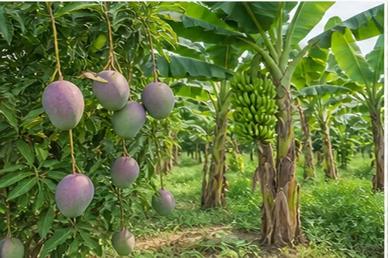
फल वाली खेती में planting material, spacing, fruit fly, hopper और पोषण management देखें.
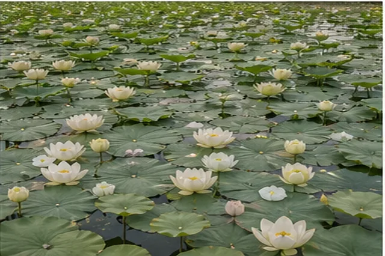
नीची जमीन/तालाब के लिए अच्छा option. Seed, pond preparation, popping और subsidy देखें.
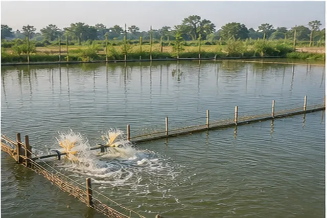
Rohu, Catla, Mrigal combo popular. Pond depth, seed quality, feed और oxygen संभालें.
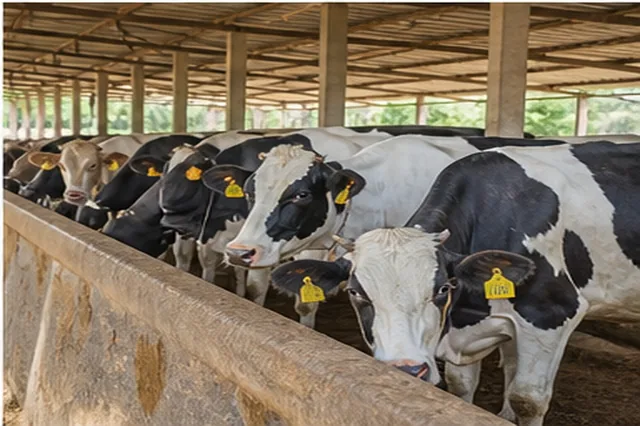
Daily income model. नस्ल, हरा चारा, vaccination, insurance और milk collection plan जरूरी.
| फसल | बिहार में उपयोग | मुख्य ध्यान |
|---|---|---|
| धान | Lowland, medium land, flood-prone और irrigated areas. | Nursery health, BLB/blast, stem borer, zinc deficiency, water management. |
| गेहूँ | Rabi की सबसे अहम cereal crop, rice-wheat belt में common. | Timely sowing, zero tillage, rust, aphid, termite, balanced fertilizer. |
| मक्का | Rabi maize और Kharif maize दोनों, सीमांचल/उत्तर बिहार में मजबूत. | Fall armyworm, stem borer, leaf blight, drainage, nitrogen split. |
| दालें | चना, मसूर, अरहर, मूंग, उड़द, मटर. | Seed treatment, wilt, yellow mosaic, pod borer, Rhizobium culture. |
| तेलहन | सरसों, राई, तिल, सूरजमुखी, अलसी. | Mustard aphid, alternaria blight, white rust, sulphur nutrition. |
| सब्जियाँ | आलू, टमाटर, बैंगन, भिंडी, मिर्च, गोभी, cucurbits. | Seedling disease, fruit borer, blight, wilt, whitefly, market timing. |
| फल और बागवानी | लीची, आम, केला, अमरूद, पपीता, नींबू, मखाना, मशरूम. | Planting material, orchard pruning, fruit fly/hopper, irrigation, storage. |
Crop Disease, Pest & Medicine
पहले diagnosis सही करें: पत्ती, तना, जड़, फल और खेत की नमी देखकर. बिना पहचान के spray न करें. नीचे common Bihar crops के लिए practical IPM guide है.
| फसल | रोग/कीट | लक्षण | उपाय | दवा/active ingredient examples |
|---|---|---|---|---|
| धान | Blast, BLB, sheath blight, stem borer, BPH | पत्ती पर धब्बे, झुलसा, तना सूखना, पौधा पीला/जलना. | Resistant variety, balanced nitrogen, field sanitation, light trap, water level control. | Blast में tricyclazole/azoxystrobin; sheath blight में validamycin/hexaconazole; stem borer में chlorantraniliprole. Label follow करें. |
| गेहूँ | Rust, loose smut, Karnal bunt, aphid, termite | पीले/भूरे powder जैसे pustules, बालियों में काला चूर्ण, पत्तियों पर aphid. | Certified seed, seed treatment, timely sowing, resistant varieties, yellow sticky trap. | Rust में propiconazole/tebuconazole; seed treatment में carboxin+thiram/tebuconazole; aphid में neem oil या recommended systemic insecticide. |
| मक्का | Fall armyworm, stem borer, turcicum leaf blight, BLSB | Whorl में छेद और frass, पत्ती पर लंबे धब्बे, sheath पर चकत्ते. | Early scouting, pheromone trap, egg mass destroy, proper spacing, residue management. | FAW में emamectin benzoate/spinetoram/chlorantraniliprole; leaf blight में mancozeb/azoxystrobin. Whorl spray सही stage पर. |
| दालें | Wilt, yellow mosaic, pod borer, aphid | पौधा अचानक मुरझाना, पीली mosaic पत्ती, फली में छेद. | Seed treatment, crop rotation, infected plant removal, pheromone trap, bird perches. | Trichoderma + Rhizobium seed treatment; pod borer में emamectin/indoxacarb; whitefly control के लिए neem/label insecticide. |
| सरसों/राई | Aphid, alternaria blight, white rust | फूल/फली पर aphid colony, पत्ती पर भूरे धब्बे, सफेद फफोले. | Early sowing, yellow sticky trap, excess nitrogen avoid, affected leaves remove. | Aphid में neem oil/thiamethoxam/imidacloprid label dose; blight में mancozeb/metalaxyl+mancozeb. |
| आलू | Late blight, early blight, cutworm, aphid | पत्ती पर पानी जैसे धब्बे, तेजी से झुलसा, tuber rot risk. | Certified seed, ridge drainage, infected haulm removal, weather-based spray. | Mancozeb preventive; late blight severe में cymoxanil+mancozeb/metalaxyl+mancozeb; aphid में recommended systemic insecticide. |
| टमाटर/बैंगन/मिर्च | Fruit borer, leaf curl, bacterial wilt, blight | फल में छेद, पत्ती मुड़ना, पौधा मुरझाना, पत्ती/फल धब्बे. | Healthy nursery, pheromone trap, rouging, staking, drip irrigation, crop rotation. | Fruit borer में spinosad/emamectin; blight में copper oxychloride/mancozeb; viral disease में vector control only. |
| भिंडी/कद्दूवर्गीय | Yellow vein mosaic, fruit fly, powdery mildew | पीली vein, फल में सड़न/कीड़ा, पत्ती पर सफेद powder. | Resistant variety, yellow sticky trap, cue-lure trap, infected plant removal. | Whitefly/aphid के लिए neem/label insecticide; powdery mildew में sulphur/hexaconazole. Harvest waiting period याद रखें. |
| केला | Sigatoka, panama wilt, rhizome weevil | पत्ती पर streak, पौधा पीला, rhizome damage. | Tissue culture healthy plant, drainage, sucker treatment, sanitation, propping. | Trichoderma soil application; sigatoka में propiconazole/carbendazim rotation; weevil के लिए traps और label insecticide. |
| आम/लीची | Hopper, powdery mildew, anthracnose, fruit borer | फूल झड़ना, सफेद powder, काले धब्बे, फल damage. | Pruning, orchard sanitation, timely irrigation, bagging, pheromone/sticky traps. | Powdery mildew में wettable sulphur; anthracnose में carbendazim/mancozeb; hopper में neem/imidacloprid as advised. |
| मखाना | Leaf spot, aphid, aquatic weeds | पत्तियों पर धब्बे, growth कम, weeds से competition. | Clean pond, healthy seed, weed removal, balanced nutrient, local advisory. | दवा pond ecology को प्रभावित कर सकती है, इसलिए KVK/मत्स्य-कृषि expert से site-specific सलाह लें. |
Bihar Services & Subsidy
अधिकतर Bihar agriculture schemes के लिए पहले DBT Agriculture Bihar पर farmer registration और 13 digit किसान पंजीकरण संख्या जरूरी होती है.
2 और 4 दुधारू पशु / बाछी-हिफर unit पर EBC/SC/ST को 75% और अन्य वर्गों को 50% subsidy. 15 और 20 पशु की बड़ी unit पर सभी वर्गों के लिए 40% subsidy व्यवस्था.
Apply / latest date देखेंगाय/भैंस की बीमारी, दुर्घटना या मृत्यु से नुकसान कम करने के लिए insurance cover. छोटे dairy farmer के लिए बहुत जरूरी.
Dairy science, पशु आहार, दूध उत्पादन, स्वास्थ्य और shed management सीखने के लिए department training updates देखें.
KCC से working capital/loan और PM-Kisan से yearly ₹6,000 support. Dairy के daily खर्च में मदद.
| 2 पशु dairy unit | Official project cost | EBC / SC / ST | अन्य वर्ग |
|---|---|---|---|
| कुल लागत | ₹1,74,000 | 75% subsidy | 50% subsidy |
| अनुमानित subsidy | 2 पशु, बीमा, transport, shed/other cost included | लगभग ₹1,30,500 | लगभग ₹87,000 |
| Cost break-up | पशु ₹1,20,000 + बीमा ₹7,200 + परिवहन ₹20,000 + पशुशाला/अन्य ₹26,800 | ||
कृषि इनपुट अनुदान, डीजल अनुदान, बीज अनुदान, जैविक खेती और गोदाम योजना के लिए DBT portal पर current window देखें.
Aadhaar, mobile, bank passbook, photo, जाति/आवासीय प्रमाण पत्र, जमीन/पशुशाला paper या self declaration, training certificate.
Dairy के लिए जिला गव्य विकास पदाधिकारी. कृषि के लिए किसान सलाहकार, कृषि समन्वयक, BAO या DAO से संपर्क करें.
किसान registration, 13 digit ID, scheme application और DBT benefit tracking.
dbtagriculture.bihar.gov.inAgriStack enrollment status, CSC login और farmer details services.
bhfr.agristack.gov.inNatural calamity से crop loss support. आवेदन से पहले DBT registration देखें.
e-Sahkari BRFSYफल, सब्जी, मशरूम, मखाना, cold storage, protected cultivation और बागवानी subsidy.
horticulture.bihar.gov.inSubsidy seed application, foundation/certified seed और Kharif/Rabi seed demand.
brbn.bihar.gov.inSoil sample, soil health card और fertilizer recommendation के लिए state lab portal.
biharsoilhealth.ine-KYC, beneficiary status और installment details.
pmkisan.gov.ineNAM और AGMARKNET से mandi price, arrivals और commodity rates देखें.
agmarknet.gov.inजिला level training, crop diagnosis, seed, livestock और dairy advisory.
kvk.icar.gov.inBihar Makhana Farming
बिहार में मखाना के लिए Horticulture Department और National Makhana Board के जरिए खेती, बीज, training, processing, branding, export, FPO और KCC/loan linkage जैसी सुविधाएँ दी जा रही हैं.
मखाना labour-intensive crop है. शुरुआत में 0.25 acre या 0.5 acre से सीखना practical है. Saharsa, Kosi, Mithila और Seemanchal belt में नीची/जलजमाव वाली जमीन इसके लिए उपयोगी हो सकती है.
Field system से मखाना क्षेत्र विस्तार के लिए unit cost ₹97,000/ha और first year assistance ₹36,375/ha बताई गई है. Minimum 0.25 acre और maximum 5 acre तक लाभ.
Dashboard / applyProduction, seed, training, processing, branding, market, export, certification और FPO support के लिए central sector scheme.
Board applyऔंका/गाँज, कारा, खेन्ची, चलनी, चटाई, अफरा, थापी जैसे tools. Previous state scheme में ₹22,100 kit पर 75% subsidy दिखी थी.
स्वर्ण वैदेही और सबौर मखाना-1 जैसे improved varieties. Recommended seed पर maximum ₹225/kg तक subsidy का उल्लेख.
MIDH मखाना योजना 16 जिलों में और National Makhana Board 21 जिलों में लागू बताया गया है.
| Topic | Practical जानकारी | Farmer action |
|---|---|---|
| खेती का तरीका | तालाब प्रणाली और खेत प्रणाली. Field system में नीची जमीन, मजबूत मेड़ और 1-2 फीट शांत पानी जरूरी. | Local उद्यान अधिकारी/KVK से field suitability check कराएँ. |
| Crop duration | लंबी अवधि crop. Sabour Makhana-1 seed-to-seed maturity करीब 240-250 दिन बताई गई है. | Labour, पानी और harvesting calendar पहले से plan करें. |
| Processing | Raw seed सुखाने के बाद roasting, tempering और popping से सफेद मखाना बनता है. | Raw seed बेचने से profit कम; processing/grading/packaging सीखें. |
| Market | Mithila Makhana GI tag से branding और export potential बढ़ा है. | FPO, trader, packaging unit या direct market से जुड़ें. |
| Risk | पानी बहुत कम/ज्यादा, high labour cost, poor seed, tough harvesting, market rate fluctuation. | पहले 0.25-0.5 acre से trial करें, फिर area बढ़ाएँ. |
Aadhaar, mobile, bank passbook, DBT registration number, जमीन का कागज/राजस्व रसीद, photo, जाति प्रमाण पत्र और lease हो तो एकरारनामा.
जिला उद्यान कार्यालय से 2025-26/2026-27 application status पूछें. DBT registration कराएँ और नीची जमीन/lease papers ready रखें.
असली value processing, grading, packaging और direct/FPO market में है. सिर्फ raw seed बेचने पर margin कम रह सकता है.
मखाना क्षेत्र विस्तार, seed/input और cultivation assistance के लिए official dashboard.
DashboardMakhana.aspxProduction, processing, branding, export और FPO support के लिए application page.
MBOnlineApp.aspxEligibility, objectives, value chain support, training और implementation details.
Guideline PDFक्षेत्र विस्तार, उन्नत बीज, training, tools kit और improved variety distribution info.
OnlineAppMakhana.aspxFinancial year और district चुनकर मखाना योजना के लाभुकों की list देखें.
MakhanaVikasList.aspxमखाना योजना apply से पहले 13 digit किसान registration number जरूरी हो सकता है.
dbtagriculture.bihar.gov.inDairy Farming Bihar
बिहार में dairy के लिए Dairy Development Directorate, Animal & Fisheries Resources Department, Sudha/COMFED और central DAHD schemes उपयोगी हैं.
कम budget में पहले 2 पशु से experience लें. 6-12 महीने milk market, Sudha/private buyer, feed cost और veterinary support समझने के बाद 4 या 10 पशु तक बढ़ें.
| Apply करने से पहले | क्या check करें | क्यों जरूरी है |
|---|---|---|
| DBT registration | 13 digit किसान registration number, Aadhaar linked mobile और bank account. | योजना का पैसा DBT से आता है और application verification इसी से जुड़ता है. |
| Dairy portal | Application window खुली है या नहीं. Dates हर साल बदल सकती हैं. | 2025-26 में online application window 25.06.2025 से 25.07.2025 तक रखी गई थी. |
| Market survey | Sudha collection center, private buyer, milk rate, transport और payment cycle. | Subsidy के बावजूद दूध बिके बिना dairy profitable नहीं होगी. |
| Animal purchase | Milk yield खुद देखकर खरीदें; health certificate, insurance, breed और calving record देखें. | Seller की बात पर ही भरोसा करने से नुकसान हो सकता है. |
हरा चारा, सूखा चारा, दाना, mineral mixture, clean water और clean shed को daily routine बनाएं.
Vaccination, deworming, tick control और mastitis prevention schedule local veterinary doctor से बनवाएं.
गोबर से vermicompost, compost pit, gobar gas या organic manure बनाकर खेत और income दोनों में फायदा लें.
Dairy schemes, application login, directory और helpline: 1800 345 6681.
dairy.bihar.gov.inपशुपालन, dairy, fisheries और state programmes.
state.bihar.gov.in/ahdMilk cooperative, procurement network और dairy product information.
sudha.coopRashtriya Gokul Mission, NPDD, AHIDF, livestock health programmes.
dahd.gov.inBihar Official Links
Search में crop, disease, dairy, seed, DBT, subsidy या portal name लिखकर filter करें.